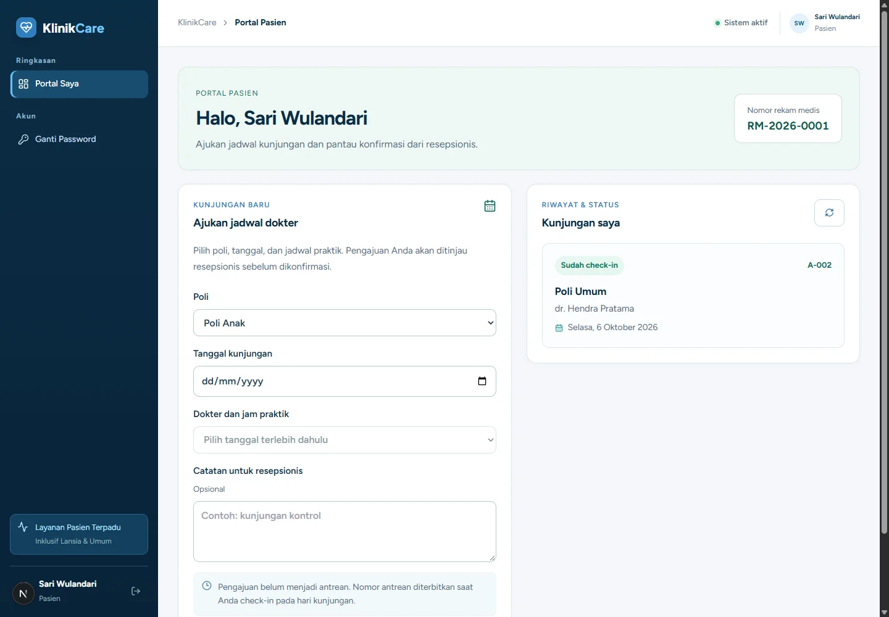
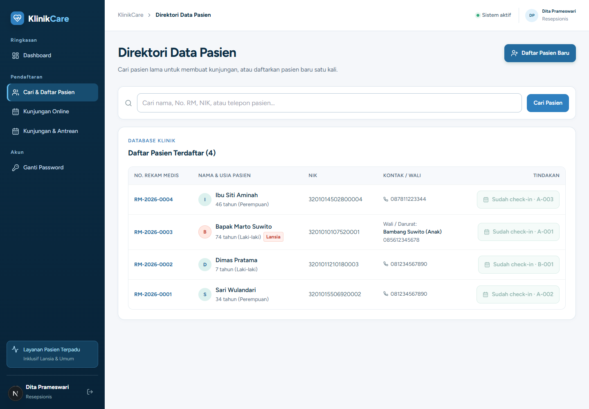
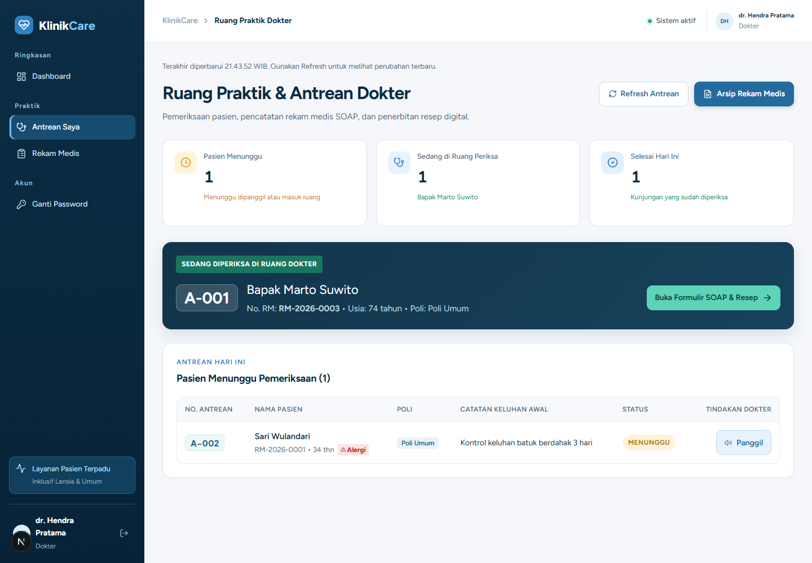
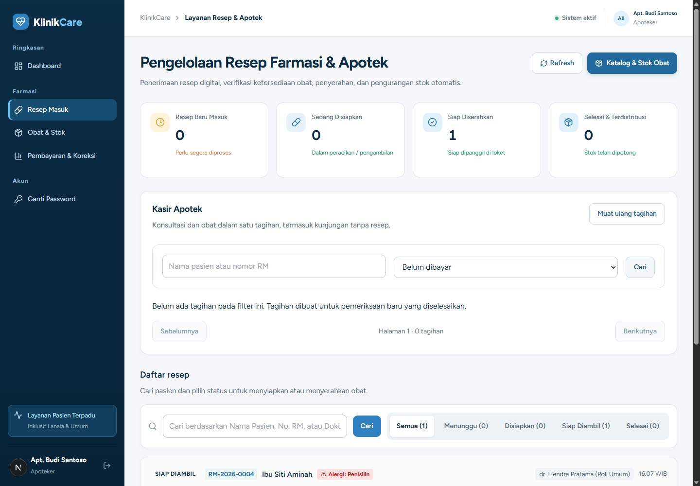

Keputusan teknis
Next.js App Router menyatukan halaman dan API. PostgreSQL dan Prisma menjaga transaksi kunjungan, tagihan, dan stok. Advisory lock melindungi nomor antrean; snapshot tagihan mempertahankan rincian harga historis.
STUDI KASUS / HEALTHCARE · FULL STACK
Satu alur.
Setiap peran terhubung.
Dari pengajuan kunjungan hingga penyerahan obat. Aplikasi klinik dan apotek yang menghubungkan pasien, resepsionis, dokter, dan apoteker.

01 / KONTEKS
Kunjungan klinik melewati beberapa meja. Status antrean, pemeriksaan, tagihan, dan obat perlu terhubung agar tiap peran mengetahui langkah berikutnya.
02 / PRODUK
Pasien mengajukan kunjungan → resepsionis meninjau dan melakukan check-in → dokter mengisi SOAP dan resep → apoteker mencatat pembayaran simulasi dan menyerahkan obat.

Resepsionis meninjau kunjungan dan melakukan check-in sebelum pasien masuk ke antrean dokter.
Lihat gambar penuh ↗ (tab baru)
Dokter melihat antrean, menulis catatan SOAP, dan menyiapkan resep.
Lihat gambar penuh ↗ (tab baru)
Apoteker menangani pembayaran simulasi dan penyerahan obat.
Lihat gambar penuh ↗ (tab baru)03 / DI BALIK LAYAR
Next.js App Router menyatukan halaman dan API. PostgreSQL dan Prisma menjaga transaksi kunjungan, tagihan, dan stok. Advisory lock melindungi nomor antrean; snapshot tagihan mempertahankan rincian harga historis.
Demo portofolio dengan data fiktif, bukan layanan klinik nyata. Pembayaran merupakan simulasi; integrasi payment gateway, laboratorium, dan rawat inap belum tersedia.